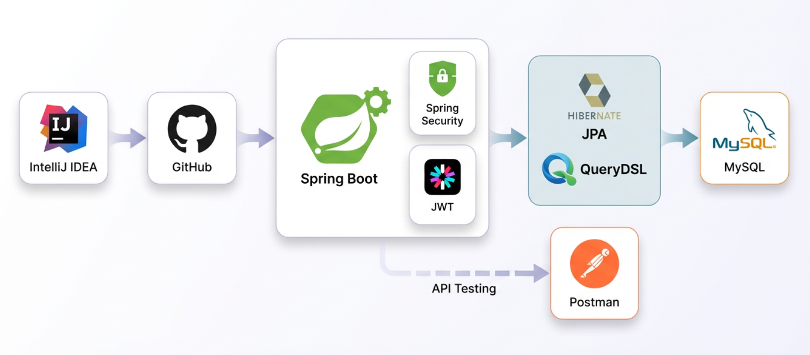

1. 주제 선정 배경
6인 팀으로 진행한 이커머스 관리자용 백오피스 백엔드 프로젝트입니다. 수많은 주문과 상품 데이터가 누적되는 관리자 환경에서 대용량 주문 데이터의 조회 성능 개선과 주문 상태 정합성 확보에 집중하여, 관리자 운영 효율성과 시스템 안정성을 향상시키는 것을 목표로 기획했습니다.
2. 담당 역할
- 주문 상태 관리, 주문 취소, 관리자 대시보드 백엔드 API 설계 및 구현 담당
- 실행 계획 분석 및 복합 인덱스(Covering Index) 설계를 통한 대시보드 쿼리 성능 최적화
- 주문 상태 전이 검증 로직 적용 및 상태 관리 일원화
- Soft Delete 예외 처리 및
CommonException기반 공통 예외 체계 표준화 구축
3. 기술 스택
Java / Spring Boot MySQL / JPA Index Optimization Covering Index Global Exception Handler
4. 아키텍처 다이어그램
4.1 서비스 아키텍처 (Service Architecture)

5. 주요 기능
- 관리자 대시보드: 주문 건수, 매출 통계, 리뷰 현황 등 다중 통계 데이터 초고속 조회 및 집계 기능
- 주문 상태 관리: 상태 변경 규칙(결제완료 → 배송준비 → 배송중 → 배송완료 등) 강제를 통한 비정상 전이 차단
- 데이터 무결성 검증: 취소 처리 및 Soft Delete 환경에서의 안전한 재고 복구 로직
6. 기술적 의사결정 및 트러블슈팅
대시보드 집계 쿼리 인덱스 최적화를 통한 응답 성능 개선
배경
관리자 대시보드 진입 시 주문 건수, 매출 통계, 리뷰 현황 등 10개 이상의 복잡한 집계 쿼리가 동시에 실행되며 심각한 응답 지연이 발생했습니다. 특히 status, deleted, created_at 조건이 Full Scan으로 수행되어 전체적인 로딩 시간이 과도하게 길어지는 문제가 나타났습니다.
기술적 의사결정
DB 실행 계획(EXPLAIN)을 면밀히 분석한 결과, 조회 패턴이 주로 '주문 상태'와 '기간' 조건 위주로 구성되어 있음을 확인했습니다. 각 컬럼의 카디널리티(Cardinality)와 WHERE 조건의 활용 순서를 고려하여 효율적인 복합 인덱스(Composite Index)를 설계하고, 디스크 접근을 최소화하는 Covering Index 전략을 적용했습니다.
주요 구현
orders테이블 복합 인덱스(status,created_at) 설계 적용- 조회 컬럼을 완벽히 커버하는 Covering Index(
status,created_at,total_price) 적용 - Soft Delete 조회를 고려한 추가 인덱스(
deleted,created_at DESC) 설계 index.sql스크립트 분리 및 DDL 초기화 순서 체계적 관리
성과
주문 집계 쿼리가 Full Scan에서 Index Range Scan으로 성공적으로 전환되었고, 대시보드 전체 응답 시간이 1,200ms에서 180ms로 약 85% 대폭 개선되었습니다. 이를 통해 관리자 운영 효율과 서버 자원 효율을 동시에 확보했습니다.
주문 상태 전이 검증 및 Soft Delete 안전 처리
배경
API를 통한 악의적 호출이나 오조작으로 주문 상태가 비정상 변경되거나, 이미 종료된 주문(취소 완료 등)이 재변경되는 경우 전체 시스템의 데이터 정합성이 훼손될 위험이 있었습니다. 또한, 주문 취소 과정에서 이미 Soft Delete(논리적 삭제) 처리된 상품에 대해 재고 복구 로직이 수행되며 예외(NPE)가 발생할 가능성이 존재했습니다.
기술적 의사결정
모든 주문 상태 변경은 서비스 계층(Service Layer)에서 엄격한 규칙(가드 로직)을 통과하도록 강제하여 비정상적인 상태 전이를 사전에 완전히 차단했습니다. 또한 예외 발생 시 프론트엔드와 규격화된 소통을 위해 예외 응답 형식을 CommonException 기반으로 표준화하고, Soft Delete 상품은 재고 복구 대상에서 안전하게 제외했습니다.
주요 구현
- 서비스 계층 내 주문 상태 전이 가드 로직(Guard Logic) 일괄 구현
DELIVERED,CANCELLED등 종단 상태에서의 재변경 시도 완벽 방어PREPARING등 취소 가능한 상태에서만 취소 로직이 수행되도록 사전 검증 적용- Soft Delete 상품의 재고 복구 과정 예외 처리 및 분기 처리 구현
CommonException커스텀 예외 기반의 글로벌 예외 핸들링(Global Exception Handler) 체계 표준화
성과
상태 전이 위반 케이스 4종을 사전 차단하여 주문 데이터 무결성을 확보했으며, Soft Delete 상품 관련 로직 결함을 해결하여 재고 복구 시 NPE(NullPointerException) 발생률을 0건으로 만들었습니다. 더불어 ApiResponse 기반으로 백오피스 전체 예외 응답 형식을 100% 통일하여 프론트엔드 연동 생산성을 크게 높였습니다.